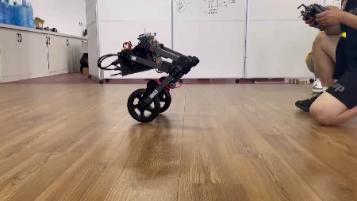

机器人原型Robotics prototype
轮腿平衡机器人原型测试Wheeled-legged balancing robot prototype
面向轮腿平台的平衡与运动稳定性，利用轮式驱动和腿部结构开展原型调试；实机短片展示平衡姿态与近距离运动。For balance and motion stability in a wheel-legged platform, a wheeled-drive and leg-structure prototype is tested; real footage shows balancing posture and short-range motion.
项目背景Background
轮腿平台结合轮式移动和腿部结构，以下展示平衡原型的实机测试。A wheeled-legged platform combines wheels with leg structures; the supplied material records a balancing prototype test.
双轮平台的支撑范围有限，姿态保持与移动响应需要协调。轮腿结构为姿态调整提供机构条件，原型阶段通过短距离实机测试观察整体运动状态。A two-wheel platform has limited support, making balance and travel interdependent. The leg structure provides mechanical freedom for posture adjustment, observed here through short-range prototype tests.
任务说明Task
观察原型在测试环境中的姿态保持与运动响应。Observe posture maintenance and motion response in the test setting.
记录机器人在测试区域中的站立平衡、姿态变化和短距离移动，重点观察轮式驱动与腿部机构共同作用下的运动连续性。The recording documents standing balance, posture changes, and short-range movement, focusing on the continuity of wheel-driven travel and leg-structure motion.
设备说明Prototype hardware
视频展示双轮与腿部结构组成的机器人原型。The video shows a robot prototype with two wheels and leg structures.

系统和关键技术System and key technologies
原型将双轮驱动与腿部机构结合，围绕姿态保持和短距离运动开展联调。视频展示平台构型、平衡姿态与运动响应，记录轮式移动和腿部结构协同作用下的实机表现。The prototype combines two driven wheels with leg mechanisms for posture and short-range motion tests. The footage records the hardware configuration, balancing posture, and motion response produced by the combined wheel and leg structure.
演示与结果Demonstration
保留原始短片中的平衡和姿态测试过程。The short clip records balancing and posture tests.